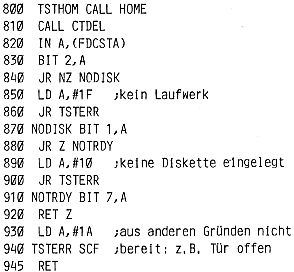

80-Bus Journal |
Jan/Feb/März 1984 · Ausgabe 1 |
nicht in der Warteschleife hängen, wie ich zunächst vermutete, sondern kehrt durch Interrupt zurück, nachdem der Controller 255 Schritte nach außen gemacht hat, um Spur0 zu erreichen. Diese Eigenschaft konnte ich einem neueren Datenblatt entnehmen.
Auf der Diskette ist PHEAS schon dementsprechend geändert. Die „Handarbeiter“ müßten das Listing in Heft 12/83 auf Seite 21 folgendermaßen ändern:
Das zusätzliche Label NOTRDY entdeckt bei meinem Laufwerk die geöffnete Tür, die ja kein eigenes Bit zur Abfrage hat. Die entsprechende Fehlermeldung „1A“ könnte auch noch auf andere Fehler hinweisen, die die Bereitschaft des Laufwerks verhindern.
Wie schon in der „Mini-Ausgabe“ erwähnt, ist die neue Version von EMDOS mit einigen zusätzlichen Features ausgestattet. Diese Version befindet sich schon auf der Systemdiskette; auf Wunsch drucken wir aber auch gerne noch ein Hexdump davon ab. (Bitte melden).
Zunächst wird beim Starten von EMDOS in der neuen Version der Stack auf $1000 gelegt. Das Fehlen dieser Eigenschaft konnte in der alten Version unter bestimmten Bedingungen Komplikationen hervorrufen.
Weiterhin kann man EMDOS nun durch Drücken der „N“- Taste verlassen. Dies ist zwar keine großartige Umwälzung, aber doch eine angenehme Eigenschaft für Benutzer, die das „N“ im ZEAP, NASPEN etc. für diesen Zweck gewohnt sind.
Es wurde schon im letzten Heft erwähnt, daß EMDOS nur Files mit maximaler Länge von 31,5 KBytes verarbeiten kann. Helmut Emmelmann fand keine Zeit, den Umfang zu erweitern (Scheint eine aufwendige Arbeit zu sein. Vielleicht hilft es, wenn ihn einige Leser dringend darum bitten?), aber er hat nun zumindest eine Fehlermeldung eingebaut, die anzeigt, daß versucht wurde, ein zu großes File abzuspeichern. Der Bildschirm zeigt „ERROR 24“, und die Diskette bleibt unberührt.
Zu diesen Änderungen kamen auch noch eine Reihe neuer Befehle.
1. F Laufwerk XXXXhex
Dies bewirkt einen CALL PHEAS mit der Laufwerksnummer in C und dem Hexwert in HL, A enthält die 5 als Funktion von PHEAS (wie 2 für Selekt oder 4 für Schreiben). Helmut verwendet diesen Aufruf, um in seinem PHEAS einem Laufwerk ein bestimmtes Format zuzuweisen. Ohne Änderung des PHEAS bleibt dieser Befehl bei uns ohne Wirkung.
2. C Ziel Quelle Dateiname (Space)(Strichpunkt)
z.B. C A B RDTRK.ASS ;
kopiert die angegebene Datei von einem Laufwerk auf das andere.
Man kann auch mehrere Dateien angeben. Besonders praktisch ist das Kopieren einer ganzen Diskette durch Ausgeben des Directory auf den Bildschirm, dann Cursor mit Cursortasten auf die Zeile oberhalb des Directory setzen und C X Y eingeben. Es werden dann alle Files des Directory kopiert. Die Systemspuren bleiben unberührt.
Bei mir läuft dieser Befehl allerdings nicht ganz einwandfrei. Beim Kopieren von 16 Dateien waren die letzten 8 in Ordnung. Beim Versuch, die ersten 8 einzulesen ergab sich aber ERROR 22 oder ERROR 40. Deshalb habe ich mir nachfolgendes BACKUP-Programm geschrieben, das eine Diskette inclusive der Systemspuren kopiert (allerdings nur für Double Density) und einwandfrei läuft.
Bitte teilen Sie mir mit, wie der C-Befehl bei Ihnen funktioniert. Helmut kommt Ende des Monats wieder nach Hause, und erst dann können wir auf seinem System die Funktion testen.
3. I Dateiname
4. 0 Dateiname
Mit diesen Befehlen wird die Diskette als User-Routine eingesetzt, d.h. Sie können
| Seite 46 von 52 |
|---|